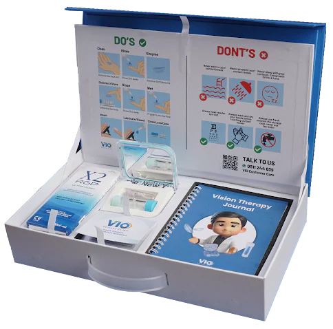
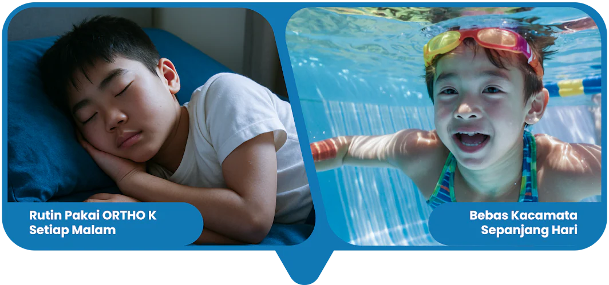
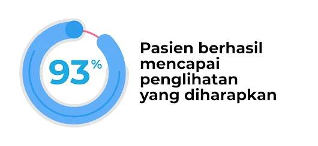
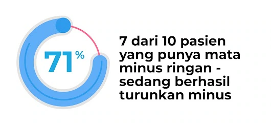

Solusi Inovatif Cegah Minus Bertambah
Punya mata minus atau silinder yang terus bertambah? Mungkin selama ini kamu merasa operasi adalah satu-satunya cara untuk melihat jelas tanpa kacamata. Tapi, sebenarnya ada lho solusi inovatif yang lebih nyaman dan aman
Booking Sekarang!Bukan lewat Operasi Tapi
dengan Rutin
Terapi Ortho K
Hanya dengan rutin menggunakan Ortho-K saat tidur setiap malam, penglihatanmu berangsur jernih sepanjang hari, bebas beraktivitas tanpa kacamata atau lensa kontak.
Booking Sekarang!
Terapi Ortho-K Teruji
Secara Medis
Operasi sering jadi solusi menghilangkan minus dengan mengikis kornea. Namun, tak semua orang cocok dengan operasi. Ortho-K hadir sebagai alternatif non-operasi dengan menggunakan lensa kontak khusus yang dipakai rutin tiap malam untuk membentuk ulang permukaan kornea. Metode ini telah teruji secara medis dapat mengurangi laju peningkatan minus, bahkan pada beberapa kasus mengurangi minus secara signifikan.
Andri Agus Syah, OD, FPCO, FAAO
Optometry Doctor of VIO Optical Clinic
Penelitian VIO Optical Clinic terhadap 78 pasien berusia 6 hingga 18 tahun yang rutin menggunakan Ortho-K selama 2023-2024

Ketajaman penglihatan meningkat dalam 1 minggu dan 1 bulan, penglihatan tetap stabil selama terapi rutin 1 tahun.


* PREDICTABILITY AND EFFECTIVENESS OF ORTHOKERATOLOGY IN INDONESIAN CHILDREN: A ONE-YEAR PILOT STUDY
Mia Nursalamah, MD, FIAVLE, Andri Agus Syah, OD, FPCO, FAAO, Adisti Lukman, MD, FIACLE, Weni Puspitasari, MD
* ORTHOKERATOLOGY EFFECT ON MYOPIA CORRECTION, VISUAL ACUITY CHANGES, AND CORNEAL CURVATURE IN MYOPIC OR MIOPE - ASTIGMATIC PATIENTS AT VIO OPTICAL CLINIC BETWEEN JANUARY-DECEMBER 2020: A RESTROPECTIVE STUDY
Andri Agus Syah, Weni Puspitasari, Michelle Eva Rebeca Natalia
Testimoni
"Setelah pemakaian Terapi Ortho K selama seminggu, mata minus anak saya berkurang dari minus 6 menjadi 0,5. Anak saya sekarang sudah tidak takut lagi kacamatanya jatuh saat beraktivitas."
- Mama Athala